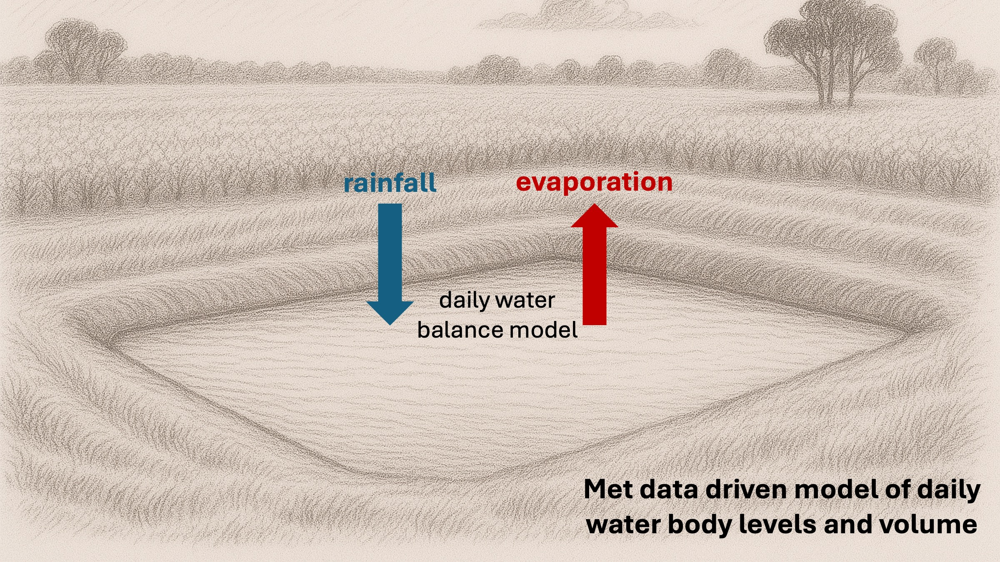
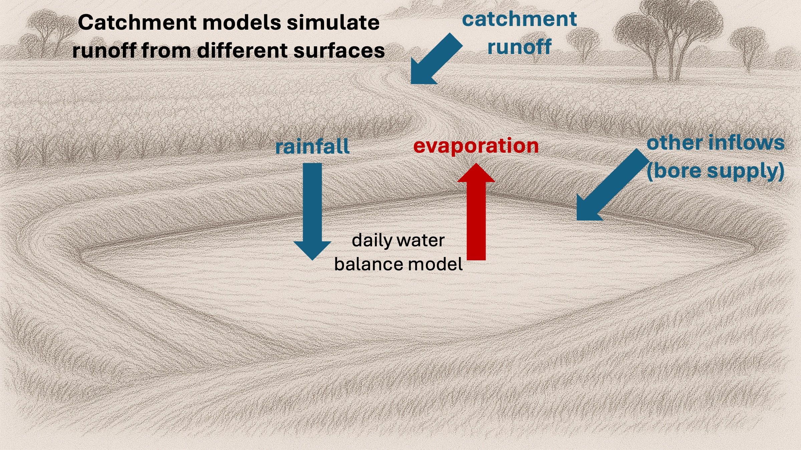
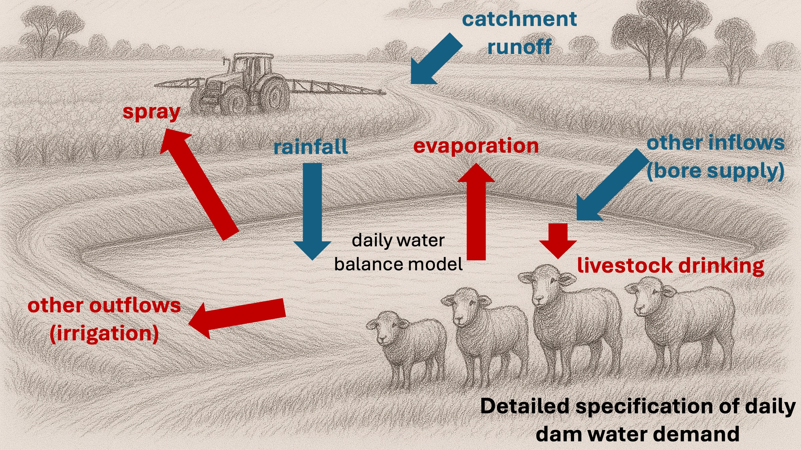

WEP Concepts
WEP is based on a daily water balance model that computes the volume, depth and surface area of water in the dam each day and also daily inflows as runoff from roaded and natural catchments and outflows to meet water demands.
Dam simulations
The user specifies the maximum volume and shape of the dam. For example, for a square dam the user would specify the surface length, maximum depth and slope (from surface edge to base edge). Using these parameters WEP will compute daily dam water volumes, water depth and water surface area. The user also specifies whether the dam is leaky or not. Leaky dams lose a fraction of water through the dam sides touching the water body each day.
For a user-specified time-period, daily weather data is retrieved from the SILO product and used to drive the simulation. The dam is filled up by rainfall events and water is lost due to evaporation. Morton’s lake evaporation is used to compute evaporation losses.

Catchment profiles
The daily water balance model is linked to a catchment model that determines how much runoff is generated and flows into the dam after rainfall events. The catchment profile parameterises the model describing the area, surface type and hydraulic properties of the catchment. Users can create custom catchment profiles or use preset catchments that are representative of common roaded catchments found in Western Australia. The parameter values for the representative Western Australian catchments were derived from monitoring of actual roaded catchments and analysis undertaken by the Water Smart Dams project.
For more details describing the catchment models, head to the user guide.

Dam profiles
Each dam simulation is assigned a dam profile. The dam profile represents water extraction from the dam considering daily livestock drinking rates, spray requirements, irrigation, and other water uses. The dam profile also lets users configure other water sources, such as bore supply, that are combined with dam water to meet overall water demand.
The dam profile can be used to describe a range of on-farm and off-farm non-potable water requirements. It is possible to configure dam profiles so that the WEP platform can be used to simulate the performance of dams off-farm, such as town dams providing irrigation water for public green spaces. The dam profile, daily evaporation, and whether the dam is leaky or not determines the daily outflows from the dam.
For more details describing dam profiles, head to the user guide.

Dam reliability and performance
The reliability of the dam is computed as the percentage of months during the lifetime of a specified simulation that there was sufficient water in the dam to meet demand, as specified by the dam profile.
Cost profiles
Simulations can be run with a costs profile. A costs profile is a record of costs associated with constructing and maintaining dams and roaded catchments. Indicative default costs are provided to all users. However, users with an account can, and should, create their own costs profiles.
For more details describing cost profiles, head to the user guide.
Analysis modes
WEP provides a range of analysis modes. All of the analysis modes are based on the above described model of dam simulations, catchment profiles, dam profiles and costs profiles:
- Dam and catchment simulation: Simulate a dam’s performance and water demand using historical weather data.
- Dam design: Find the optimum and cheapest reliable dam for your catchment and water demand.
- Catchment analysis: Find the optimum and cheapest reliable catchment surface and area for your water demand.
- Leaky dam analysis: Fix a leaky dam and see how dam performance improves and compute the cost-benefit of fixing the leak.
- Evaporation reduction analysis: Cover a dam and see how dam performance improves and compute the cost-benefit of putting evaporation covers on the dam.
For more details describing the analysis modes, head to the user guide.
Next steps
Try out the Water Evaluation Platform by following the Getting started guide.